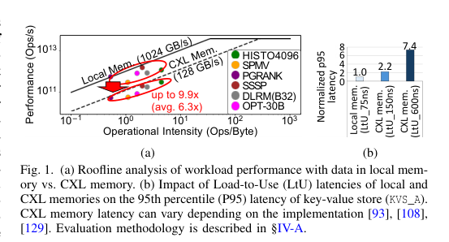
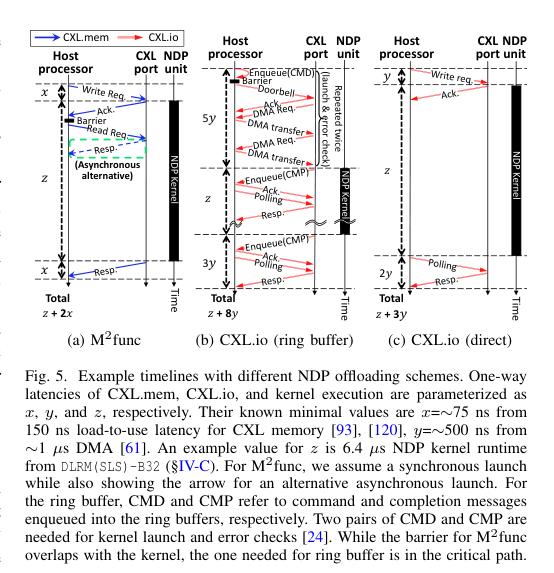
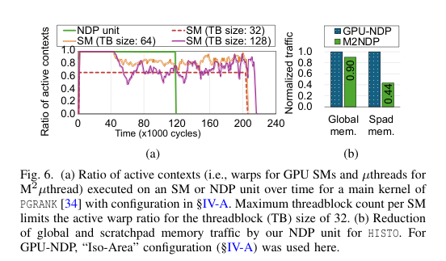
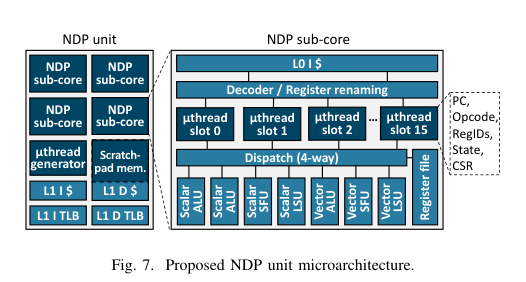
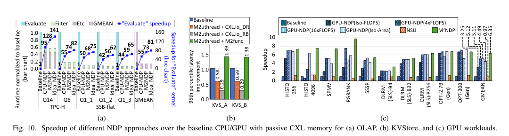
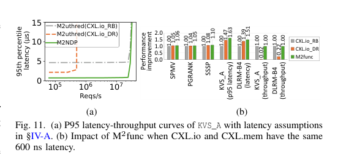
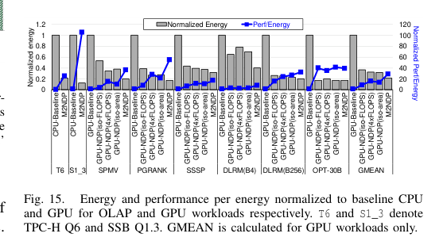
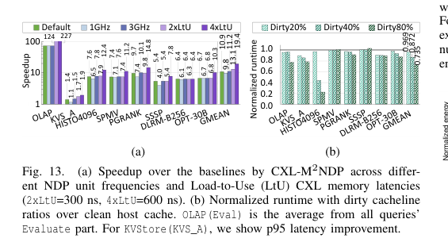

← Daily Papers
本报告由大模型自动生成，可能存在理解、归纳或数据转述错误；请以原论文为准。
Low-Overhead General-Purpose Near-Data Processing in CXL Memory Expanders Hyungkyu Ham, Jeongmin Hong, Geonwoo Park, Yunseon Shin, Okkyun Woo, Wonhyuk Yang, Jinhoon Bae, Eunhyeok Park, Hyojin Sung, Euicheol Lim, Gwangsun Kim · IEEE/ACM International Symposium on Microarchitecture (MICRO) · 2024 · 原文 · PDF
报告模型：gemini-3.1-pro-preview / high
本文介绍并详细分析了2024年发表（预印本时间2024年9月）的研究论文《Low-overhead General-purpose Near-Data Processing in CXL Memory Expanders》（CXL内存扩展器中低开销的通用近数据处理）。以下将按逻辑顺序、逐章节为您深入拆解本文的背景、核心方法、实验评估及最终结论。
一、 研究背景与问题定义 (Introduction & Background)
在现代计算系统中，诸如大型语言模型（LLM，Large Language Model）、内存在线分析处理（OLAP）、键值存储（KVStore）等应用对内存容量的需求急剧增长。传统的本地动态随机存取存储器（DRAM）容量受限于主板插槽数量和处理器引脚，已无法满足需求。
1. 基础概念定义与系统全貌
CXL (Compute Express Link)： [背景补充] CXL 是一种基于PCIe（外围组件互连快速总线）物理层的高速互连工业标准，旨在提供处理器、加速器和内存扩展器之间的高带宽、低延迟连接。CXL 协议栈： CXL 定义了三种子协议。CXL.io 用于设备发现、配置和中断等管理任务（其开销与传统的PCIe相当，延迟极高，通常在微秒级别）；CXL.cache 允许设备缓存主机内存；CXL.mem 则允许主机处理器通过普通的加载/存储（Load/Store）指令直接访问连接在CXL总线上的外部内存（即CXL内存扩展器），其延迟远低于 CXL.io，通常约为 150-175 纳秒（ns）。NDP (Near-Data Processing，近数据处理)： 指将计算逻辑下放到存储器或存储控制器内部。由于计算单元更靠近数据所在的位置，可以大幅减少数据在主机（CPU/GPU）与存储器之间搬运时产生的带宽瓶颈和能耗。
2. 本文解决的核心问题
尽管 CXL.mem 提供了相对较低延迟的内存扩展方案，但图1 （论文原文图表）揭示了一个严峻问题：当应用的数据被放置在 CXL 内存中时，由于 CXL 链路的带宽（例如 64 GB/s）显著低于 CXL 内存内部的 DRAM 带宽（例如 409.6 GB/s），内存密集型应用的性能会严重下降（最高下降 9.9 倍）。

Figure 1 · 原文 PDF 第 1 页 为了解决 CXL 链路带宽瓶颈，学术界和工业界提出了在 CXL 内存中引入 NDP 的设想。但现有方案存在两个致命缺陷：
计算单元成本与效率不匹配： 现有的 NDP 设计要么是针对特定应用定制的硬件（灵活性差，无法适应通用场景），要么直接将通用的 CPU 或 GPU 核心放入内存控制器中。由于 CPU/GPU 架构旨在优化计算密集型任务，它们处理低算术强度、内存密集型任务时，硅片面积、功耗和寄存器资源的利用率极低。通信与卸载延迟极高： [背景补充] 在传统架构中，主机向外设（如GPU或PCIe设备）卸载计算任务（Offloading）时，通常需要通过 CXL.io/PCIe 维护一个位于内核空间的环形缓冲区（Ring Buffer） 。主机写入命令、更新指针，设备通过直接内存访问（DMA）拉取命令，这涉及到复杂的内核态切换和多次协议栈往返。
如图5b 所示，这种传统的环形缓冲区机制执行一次内核启动（Kernel Launch）需要耗费约 3 至 6 微秒（~3-6 μ μ μ 
Figure 5 · 原文 PDF 第 5 页
二、 M2
为了在 CXL 内存中实现低开销、高效率的通用近数据处理，作者提出了 M2 （Memory-Mapped NDP，内存映射近数据处理，其中上标 2 代表 Memory-Mapped 包含两个首字母 M）架构。它包含两个核心组件：用于通信的 M2 （Memory-Mapped function，上标 2 含义同前）和用于计算的 M2 μ （Memory-Mapped μ μ
1. M2
设计目标： 彻底绕过高延迟的 CXL.io/PCIe 协议和操作系统内核态切换，允许主机在用户态仅使用极低延迟的 CXL.mem 协议来向 NDP 单元下发计算任务和传递参数。
硬件约束与挑战： CXL.mem 协议是由工业标准强制规定的，其中仅定义了用于普通内存读写的报文类型。如果修改协议或引入自定义的机器指令，将无法兼容现有的商用 CPU。
作者的解决方案（巧妙的硬件拦截）：
M2 作者在 CXL 内存的物理地址空间中划出了一小块不可缓存（Uncacheable）的特定区域，专门用于通信，而不是存储数据。Packet Filter（报文过滤器）： 作者在 CXL 内存的输入端口硬件中增加了一个极小的过滤模块。它记录了每个主机进程分配的 M2 通信数据流（参考表2与图4）： 当主机 CPU 想要启动一个 NDP 任务时，它只需执行一条普通的汇编 Store 指令，将参数写入其对应 M2 地址偏移量（Offset） 。
Packet Filter 发现该 CXL.mem 写请求的目标地址命中了 M2
硬件根据请求的地址偏移量（例如，以 1 ≪ 5 ≪ 2 ≪ 5
如果需要获取 NDP 的返回值，主机随后对同一地址发起一次普通的 Load（读）请求，NDP 控制器会将结果作为普通内存数据返回。
为什么这样做？ 这种设计完全遵循未经修改的 CXL.mem 硬件协议。它将复杂的设备管理抽象为了极其简单的内存地址访问。避免了系统调用，消除了复杂的 DMA 操作，使得任务卸载延迟从微秒级（μ
2. M2 μ
设计目标： 针对内存密集型应用，提供一种比 GPU 流式多处理器（SM）更高效、硅片面积更小的多线程计算单元。
背景补充与 GPU 的问题： GPU 使用 SIMT（单指令多线程）模型，将 32 个线程绑定为一个 Warp（线程束）统一执行。对于不规则的图计算等内存密集任务，容易产生线程束内分歧（Intra-warp divergence） ，导致大量 ALU 空转。同时，GPU 编程模型通常需要软件代码通过块索引和线程索引进行复杂的“地址计算（Address Calculation）”以定位数据，这在 SIMT 中产生了大量的冗余标量计算。
作者的解决方案：
作者基于修改版的带向量扩展（RVV）的 RISC-V 指令集架构，设计了极轻量级的微线程（μ
直接内存映射（Mapped μ 这是一个极其关键的架构创新。在 M2 μ μ x1 和 x2，其中字母 x 原文未说明具体含义，1 和 2 为无量纲的寄存器索引）已经被硬件自动初始化为该线程对应的数据基址和偏移量。结果： 直接消除了 GPU 中用于计算内存地址的冗余指令，显著减少了寄存器压力。细粒度多线程（FGMT，Fine-Grained Multithreading）： μ μ 图6a 显示这极大提高了不规则负载的活跃上下文比例）。
Figure 6 · 原文 PDF 第 7 页 指令混合与存储层次（图7）： NDP 单元的微架构（Microarchitecture）包含标量 ALU 和向量 ALU。向量 ALU 的位宽（如 256 位/32 字节）被刻意设计为匹配 LPDDR5 内存的单次存取粒度，以避免带宽浪费。由于消除了 GPU 线程块的限制，所有在同一个 NDP 单元上运行的 μ 图6b ）。
Figure 7 · 原文 PDF 第 7 页 虚拟内存支持（DRAM-TLB）： 由于 NDP 单元需要使用虚拟地址访问巨大的 CXL 内存，片上 TLB（转译后备缓冲区）极易发生缓存未命中（Miss）。作者在 CXL 内存的 DRAM 中分配了特定区域作为 DRAM-TLB。每个条目占 16 字节（包含 ASID、Tag、物理页号等）。由于使用了简单的哈希映射计算条目位置，只需一次额外的 DRAM 访问即可处理 TLB Miss，避免了向主机请求页表漫游的巨大延迟。
三、 实验评估 (Evaluation)
1. 实验方法与跨层建模设定
体系结构与硬件建模（非物理层 EDA）： 必须明确，本文并未涉及将微架构转化为底层版图（Layout）、布线（Routing）或物理时序收敛等狭义的 EDA 协同设计。 作者使用的是周期级体系结构模拟器 。他们修改了 ZSim 和 Accel-Sim 以模拟逻辑功能，结合 Ramulator 模拟 DRAM 时序。功耗与面积代价模型： 对于“面积”和“功耗”等物理指标，作者采用了分析模型而非 EDA 综合结果。使用 McPAT 评估 CPU 功耗，AccelWattch、CACTI 6.5（用于 SRAM 缓存和 TLB 面积/功耗评估，并按系数缩放至 7nm 工艺）、DSENT（用于片上网络）来计算代价。这种基于分析模型的跨层接口相比实际物理综合存在信息损失，例如无法精确反映实际布线拥塞、时序违例、物理版图布局等底层物理细节。评估对象： 对比了 Baseline CPU、Baseline GPU，以及传统的直接放入内存的 CPU-NDP 和 GPU-NDP。GPU-NDP 还细分了等面积（Iso-Area）和等算力（Iso-FLOPS）的变体作为对照。测试负载（表5）： 作者精心挑选了对内存容量要求高且缓存命中率低的应用，包括 OLAP 过滤阶段（TPC-H 数据库查询）、KVStore（键值存储获取/设置）、图分析（PageRank、最短路径）以及深度学习推荐模型（DLRM）和大型语言模型（OPT-2.7B/30B 的推理生成阶段）。所有的 NDP Kernel 代码目前是由作者手动用汇编编写的，因为 RISC-V 向量扩展的软件编译生态尚未成熟（这是一个被明确承认的软件约束）。
2. 核心实验结果与分析
整体性能提升（图10）： 相较于使用被动 CXL 内存的主机 CPU 方案，M2 最高 128 倍（平均 73.4 倍） 的加速。原因是 M2 
Figure 10 · 原文 PDF 第 11 页 M2 在 KVStore 这种延迟敏感、请求频繁的细粒度负载中，如果使用传统的 CXL.io 环形缓冲区机制，由于启动延迟过高，端到端延迟甚至比 Baseline 还要慢 1.70-3.46倍。而引入 M2 47.3倍 。
Figure 11 · 原文 PDF 第 11 页 M2 μ 尽管 GPU-NDP(Iso-Area) 占用的硅片面积与 M2 2 2 能耗优化（图15）： M2 
Figure 15 · 原文 PDF 第 12 页 硬件开销： 根据 CACTI 评估，32 个 NDP 计算单元（包含对应的缓存和寄存器）在 7nm 工艺下仅增加约 26.4 平方毫米（m m 2 m m 2
四、 贯穿全文的主线、结论与局限性 (Synthesizing Thread & Conclusion)
主线逻辑：
这篇文章的起点是观察到一个硬件发展的不匹配 ：为了获取更大的内存容量，工业界引入了 CXL 扩展器；但由于 CXL 外部线缆的物理限制，其带宽远远小于内存芯片内部的带宽，导致吃内存的应用被“饿死”在传输路上。为了打破这个瓶颈，必须把计算推向数据（NDP）。然而，作者发现粗暴地搬运现有架构是行不通的 ：传统的主机卸载机制（CXL.io）对于小任务来说太慢了，且传统的计算核心（GPU/CPU）做纯访存任务太浪费晶体管了。因此，作者被迫在通信协议层面（首创 M2 2 μ
关键假设、局限与无法过度推广的结论：
极度依赖软件的数据放置机制（Data Placement）： 作者在“IV-A 评估方法”和“III-I 多设备扩展”中明确提到，他们假设 用户级软件已经聪明地将数据（Page）局部化地放置在了对应的 CXL 内存中。如果在多块 CXL 内存间存在频繁的交叉数据访问（P2P访问），CXL 交换机的带宽将成为新的致命瓶颈。该架构本身不提供硬件级的自动数据分布。缓存一致性退化的极限（图13b）： 设计假设主机 CPU 通常不会缓存 NDP 正在处理的大块数据（例如 LLM 权重在推理时是只读的）。但如果主机的 L3 缓存中碰巧包含了大量被修改过（Dirty）的内存块数据，CXL 需要不断触发回退失效（Back-Invalidation, BI）协议来维持一致性，此时 M2 
Figure 13 · 原文 PDF 第 12 页 软件编译生态的缺失： 这是一个强约束。目前没有成熟的类似于 CUDA 或 ISPC 的高级编译器能够将高级语言代码直接编译成包含 x1/x2 寄存器自动地址初始化的 M2